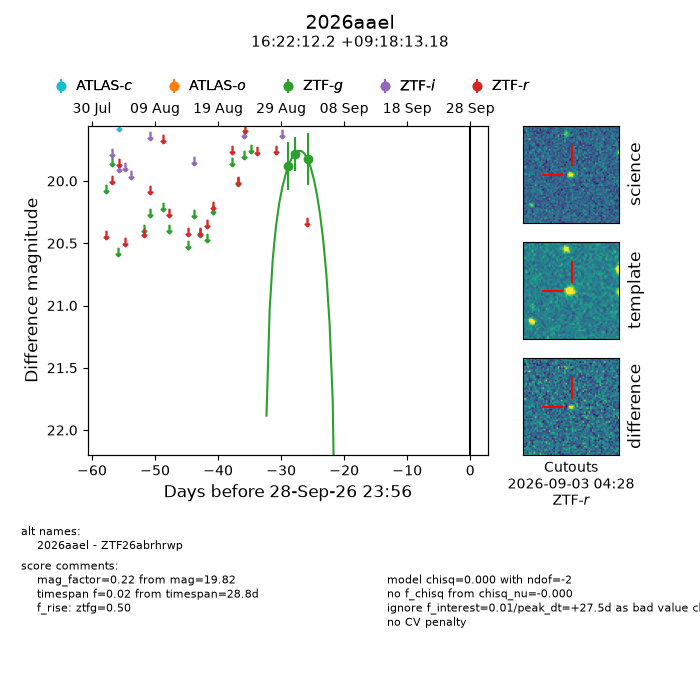
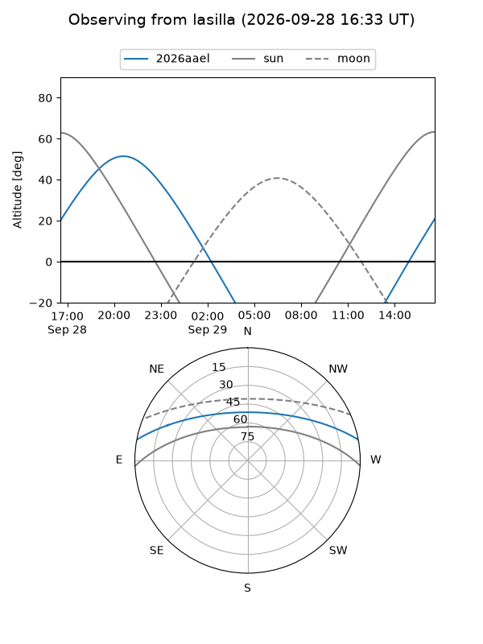
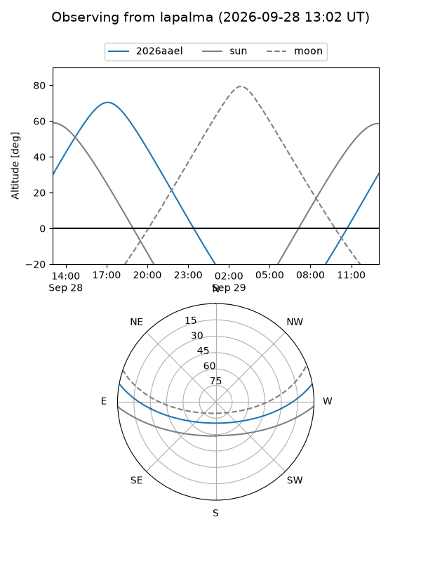
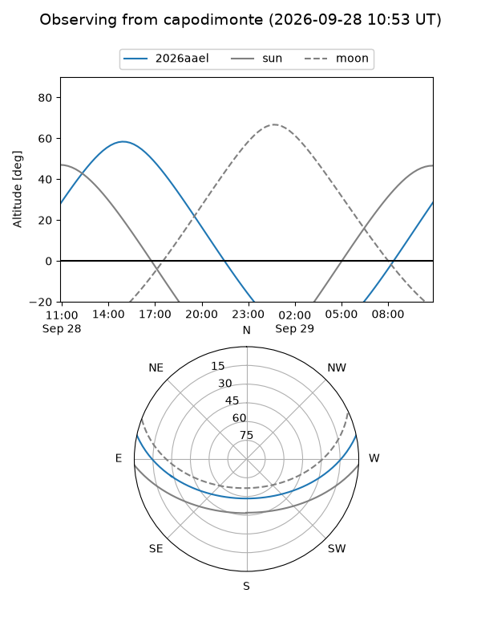
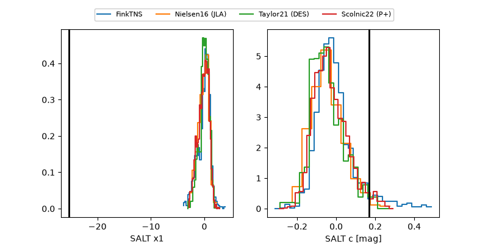

2026aael
Target 2026aael at 2026-09-29 09:28
Aliases and brokers:
FINK-ZTF: ztf.fink-portal.org/ZTF26abrhrwp
Lasair-ZTF: lasair-ztf.lsst.ac.uk/objects/ZTF26abrhrwp
ALeRCE-ZTF: alerce.online/object/ZTF26abrhrwp
YSE-PZ: ziggy.ucolick.org/yse/transient_detail/2026aael
TNS name: wis-tns.org/object/2026aael
Direct TNS query: direct search
alt names
ZTF26abrhrwp (ztf,fink_ztf)
2026aael (tns,yse)
Coordinates:
equatorial (ra, dec) = 245.5510,+9.30366
equatorial (HMS+DMS) = 16:22:12.23,+09:18:13.18
galactic (l, b) = (23.6090,+37.30438)
Flags:
TNS type: nan
peak dt: +27.9
Photometry:
last ztfg=19.82
3 ztfg detections
Lightcurve

Visibility



Additional plots
